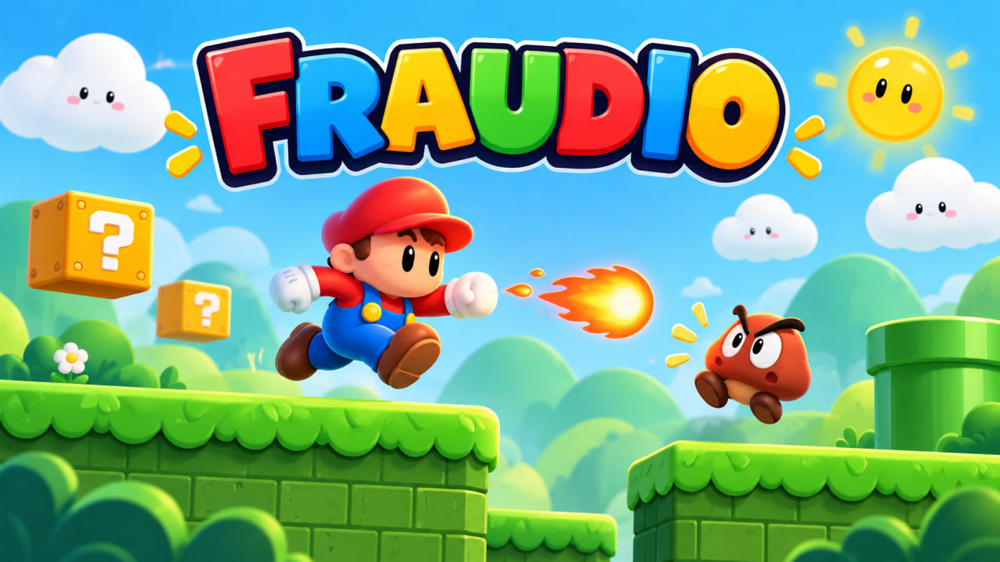
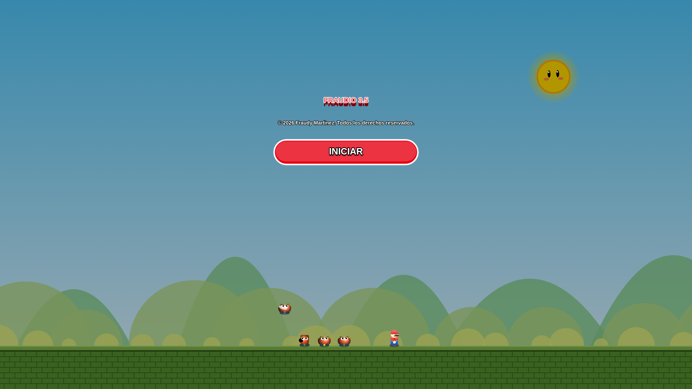
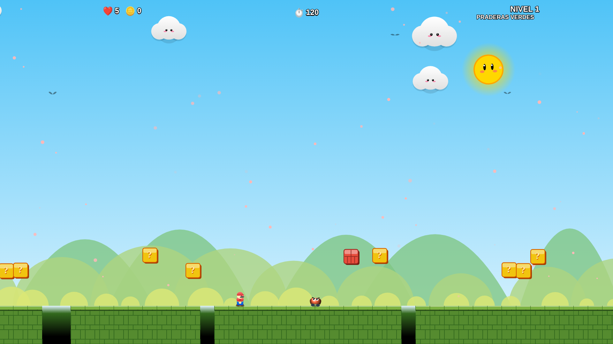
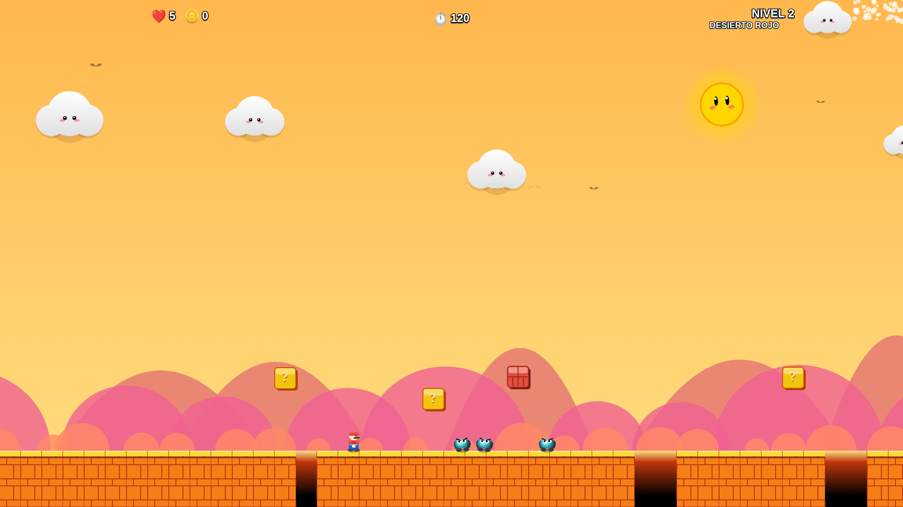
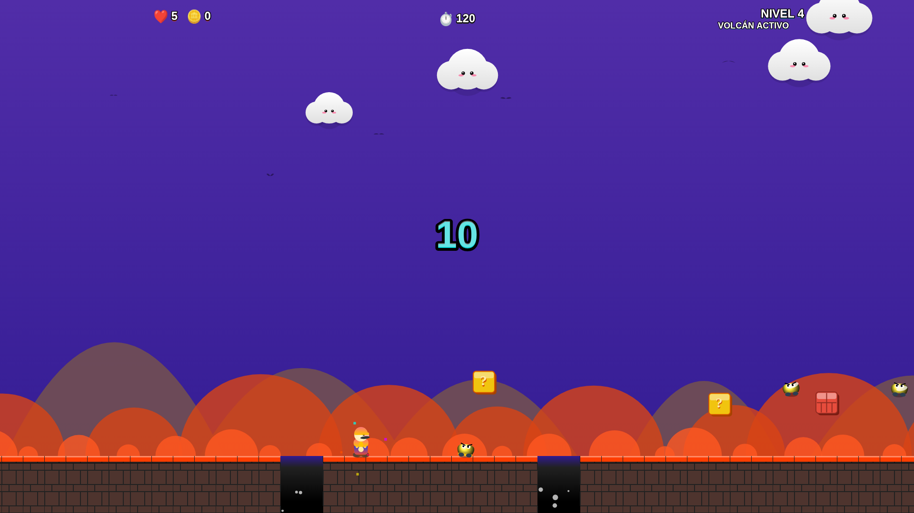
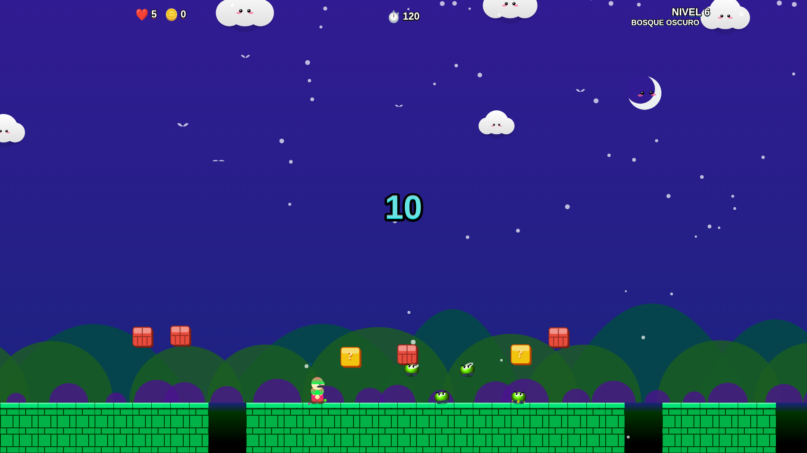
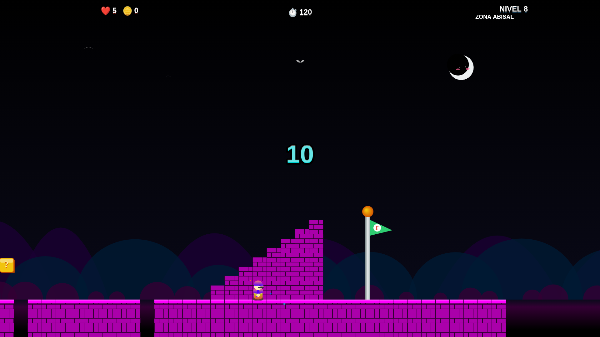

🌎
Ocho mundos
Praderas, desierto, cumbres, volcán, playa, bosque, cielo y una zona abisal final con identidad visual propia.
Un plataformas 2D de acción con ocho mundos, tres niveles de dificultad, power-ups, música propia por escenario y controles pensados para escritorio y móvil.

Una experiencia directa y rápida: entrar, elegir dificultad y abrirse paso hasta la bandera antes de que se termine el tiempo.
Praderas, desierto, cumbres, volcán, playa, bosque, cielo y una zona abisal final con identidad visual propia.
Relajado, Normal y Difícil cambian la presión y la cantidad de enemigos para adaptar el reto.
Consigue mejoras, aprovecha habilidades temporales y usa bolas de fuego para abrirte camino.
Cada mundo tiene su propia pista y el ritmo aumenta cuando entrás en los últimos 30 segundos.
Parallax, partículas, animaciones y efectos ambientales acompañan el avance por cada zona.
Jugá con teclado en escritorio o con botones táctiles integrados desde el navegador del teléfono.
Cada etapa cambia el ambiente, la paleta, los efectos y la presión del recorrido.
Un vistazo rápido al ritmo, los mundos y la presentación de Fraudio.
Imágenes tomadas de la versión actual del juego.






La versión web se adapta automáticamente al dispositivo.
Usá los botones virtuales de movimiento, salto y acción que aparecen dentro del juego. No hace falta instalar controles adicionales para la versión online.
Requisitos orientativos suministrados para la edición de Windows.